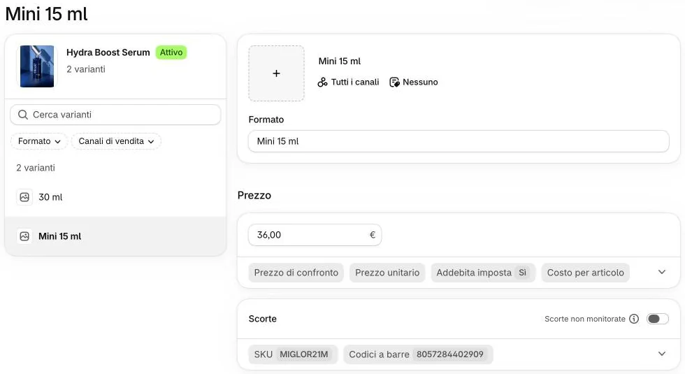

Aggiungere la Mini 15 ml
- 5 minuti
- Si vede subito sul sito
La Mini è un secondo formato dello stesso prodotto, non un prodotto a parte. Oggi otto prodotti ce l’hanno.
Un prodotto non va mai messo «Attivo» prima che la Mini abbia il suo SKU.
-
Aprite il prodotto e scendete al riquadro «Varianti».
 1
1
-
Aggiungete all’opzione «Formato» il valore «Mini 15 ml».
2
Come si scrive?
Esattamente «Mini 15 ml», come negli altri sette prodotti. Il primo valore resta il formato pieno, per esempio «30 ml».
-
Controllate che nella tabella «Mini 15 ml» sia la seconda riga.
3
Perché seconda? E se è la prima?
Se fosse la prima, menu, home, catalogo e test mostrerebbero prezzo e formato della Mini al posto del formato pieno.
Se è finita prima, rimettete il prodotto in «Bozza» e scriveteci: la sistemiamo insieme prima di ripubblicarlo.
-
Nella tabella scrivete il «Prezzo» della Mini, poi cliccate «Salva».
4
Il prodotto è già online: la Mini si vede subito?
Sì, appena salvate. Fate subito il passo 5: una Mini senza SKU non deve restare sul sito. Su un prodotto ancora in «Bozza», non mettetelo «Attivo» prima che la Mini abbia il suo SKU.
-
Cliccate «Mini 15 ml», scrivete «SKU» e «Codici a barre», poi cliccate «Salva».

5Che SKU scrivo?
Come quelli di oggi: per esempio MIGLOR21M per la Mini di Hydra Boost Serum. Diverso da tutti gli altri. Il codice a barre è quello della Mini.

Sul sito
Nella scheda compare la scelta del formato (si vede solo se i formati sono più d’uno). Le piastrelle di catalogo, menu e home mostrano sempre il formato pieno.